Как мозг выбирает простые объяснения
{kind=link}
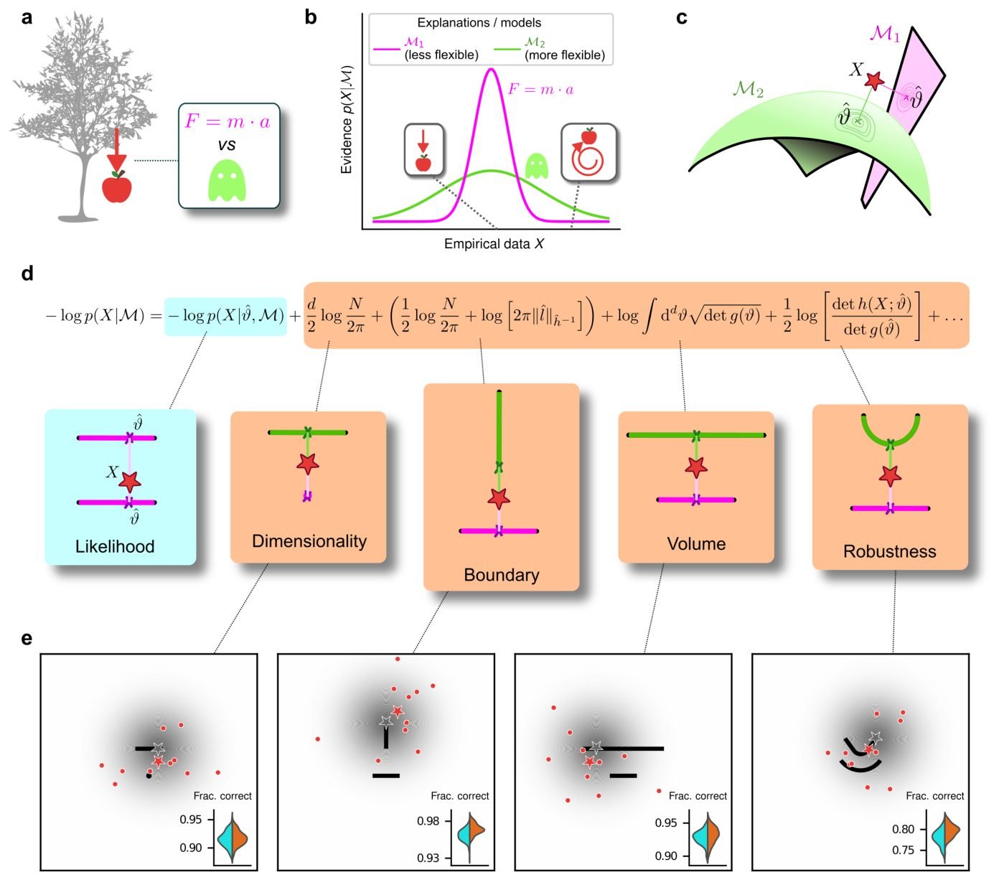
Когда мы сталкиваемся с неопределенностью, наш мозг отдает предпочтение более простым объяснениям. Новое исследование показало, что это не просто психологическая привычка, а точный математический расчет. Поведение человека совпадает с байесовским выбором моделей, который защищает от переобучения на случайных данных. Искусственные нейросети, в отличие от людей, эту особенность не всегда повторяют.
Главное
- Люди систематически предпочитают простые объяснения зашумленным данным
- Поведение участников совпадает с байесовской теорией выбора моделей
- Нейросети не всегда воспроизводят эту склонность к простоте
Подробнее
Исследователи изучили, как люди делают выбор на основе зашумленных и неполных данных, используя подходы статистического выбора моделей. В эксперименте участники оценивали вероятность того, что набор из десяти точек на плоскости был сгенерирован определенной фигурой. Авторы применили аппроксимацию фишеровской информации (Fisher Information Approximation), чтобы разложить штрафы за сложность моделей на четыре геометрические составляющие: размерность, объем пространства параметров, граничные эффекты и форму. Оказалось, что человеческий выбор количественно точно предсказывается интеграцией по всем возможным скрытым причинам, а не просто случайным шумом в ответах.
Интеграция по скрытым параметрам наказывает избыточно гибкие объяснения, которые могут подойти к любому шуму, но не отражают реальность. В то время как люди стабильно демонстрируют это смещение в сторону простоты даже в тех случаях, когда оно оказывается невыгодным, некоторые искусственные нейронные сети лишены такого свойства. Это говорит о том, что принципы оптимального статистического вывода заложены в фундаментальные механизмы человеческого познания.
Ограничения
Работа основана на поведенческих экспериментах в контролируемых задачах и не исследует прямую нейронную активность мозга.
Полный перевод статьи
Резюме
Бритва Оккама представляет собой принцип, согласно которому при прочих равных условиях следует отдавать предпочтение более простым объяснениям, а не более сложным. Считается, что этот принцип лежит в основе принятия решений человеком, однако природа такого руководства до конца не изучена.
Важно
В пререгистрированных поведенческих экспериментах было показано, что люди количественно предпочитают более простые объяснения неопределенных данных в соответствии с теориями выбора моделей.
В настоящей работе мы использовали пререгистрированные поведенческие эксперименты, чтобы показать, что люди склонны отдавать предпочтение наиболее простому из двух альтернативных объяснений неопределенных данных. Эти предпочтения количественно согласуются с предсказаниями формальных теорий выбора моделей, которые налагают штраф за избыточную гибкость. Данные штрафы возникают при рассмотрении не только наилучшего объяснения, кроме того, интеграла по всем возможным релевантным объяснениям.
Пояснение
Выбор моделей — это статистический подход к поиску баланса между точностью подгонки модели под данные и её простотой, позволяющий избежать избыточного заучивания зашумленной информации.
Мы дополнительно демонстрируем, что эти предпочтения простости сохраняются у людей, но отсутствуют у некоторых искусственных нейронных сетей, даже в тех случаях, когда они являются дезадаптивными. Наши результаты подразумевают, что принципиальные понятия статистического выбора моделей, включая интегрирование по возможным скрытым причинам с целью предотвращения переобучения на зашумленных данных, могут играть центральную роль в принятии решений человеком.
Осторожно
Исследование основано на поведенческих тестах с участием людей и сравнении с искусственными сетями; результаты показывают лишь корреляцию с математическими моделями выбора.
Введение
При принятии решений в реальном мире нам часто приходится выбирать между несколькими правдоподобными объяснениями зашумленных и разреженных данных. При оценке конкурирующих объяснений бритва Оккама говорит о том, что мы должны учитывать не только то, насколько хорошо они объясняют уже наблюдавшиеся данные, но и их потенциально избыточную гибкость при описании альтернативных и потенциально нерелевантных данных, которые еще не наблюдались (например, «это сделал привидение!»; Рис. 1a, b). Подобное предпочтение простоты уже давно предлагается в качестве организующего принципа психической деятельности (Feldman, 2016), например, в ранней концепции Prägnanz в гештальтпсихологии (Koffka, 2014; Wagemans et al., 2012), в ряде «принципов минимума» для зрения (Hatfield, 1985), а также в теориях, отводящих центральную роль сжатию данных в познании (Chater, 1999; Chater & Vitányi, 2003). Простота также рассматривается как одна из ключевых особенностей, помогающих нам оценивать достоинства объяснения в рамках более широких теорий объяснительной ценности (Wojtowicz & DeDeo, 2020).
Важно
Предпочтение простоты (бритва Оккама) является фундаментальным организующим принципом человеческого познания при оценке зашумленных данных и выборе между конкурирующими объяснениями.
Многочисленные поведенческие исследования показали, что лица, принимающие решения, демонстрируют предпочтение простоты при выполнении самых разных задач, включая перцептивную оценку, реконструкцию источников и причинное объяснение (Chater, 1999; Genewein & Braun, 2014; Gershman & Niv, 2013; Griffiths & Tenenbaum, 2005; Johnson et al., 2014; Körding et al., 2007; Little & Shiffrin, 2009; Lombrozo, 2007; Pothos & Chater, 2002). В этих исследованиях был предложен ряд формальных определений того, что именно может составлять «простоту», которой отдается предпочтение (или, эквивалентно, «сложность», которой избегают) в таких условиях, включая количество ненаблюдаемых или необъясненных причин, привлекаемых в объяснении (Pacer & Lombrozo, 2017), длину описания и колмогоровскую сложность (Chater, 1999), либо статистическую сложность, возникающую при вычислении маргинальных правдоподобий в байесовском выводе (Griffiths & Tenenbaum, 2005; Körding et al., 2007). Согласуясь с байесовским объяснением, в некоторых случаях такие предпочтения простоты ослабевают при предоставлении более вероятностных свидетельств, что, как предполагается, отражает байесовский априорный коэффициент, придающий больший вес более простым объяснениям (Bonawitz & Lombrozo, 2012; Lombrozo, 2007; Pacer & Lombrozo, 2017). Было показано, что и другие типы человеческих суждений совместимы с байесовским подходом, который штрафует гибкие объяснения, причем эта гибкость контролируется размером пространства параметров, а не его размерностью (Blanchard et al., 2018). Однако остается неизвестным, связаны ли и каким именно образом подобные предпочтения простоты количественно с конкретными компромиссами между простотой и качеством подгонки объяснения, предписываемыми теоретическими понятиями сложности.
Пояснение
Байесовский вывод — это метод статистическогоinference, который обновляет вероятность гипотезы по мере поступления новых данных, позволяя балансировать между простотой модели и ее точностью.
Целью данного исследования было установить теоретически обоснованное количественное описание предвзятости в сторону простоты при принятии человеком перцептивных решений. Для этого мы разработали набор задач, которые формализовали эти решения как проблему выбора статистической модели. Такой подход позволил нам выявить специфические особенности, которые делают одну модель (т.е. потенциальный источник наблюдаемых данных) более или менее сложной по сравнению с другой, и тем самым требуют введения конкретных штрафов для противодействия их предсказуемому влиянию на качество подгонки из-за избыточной гибкости (Balasubramanian, 1997). Что особенно важно, эти штрафы могут зависеть от данных и, следовательно, не могут быть полностью воспроизведены с помощью более общего предпочтения простоты (Blanchard et al., 2018; Lombrozo, 2007). Как мы подробно описываем ниже, этот подход позволил нам выявить специфические формы предвзятости в сторону простоты, которые поддерживают идею о том, что бритва Оккама — это не просто предпочтение, а проявление ключевых процессов принятия решений, которые интегрируют возможные латентные причины для противодействия проблемам, возникающим при попытке сопоставить гибкие объяснения с зашумленными данными.
Осторожно
Настоящее исследование сосредоточено на поведенческих моделях принятия решений, и его выводы требуют дальнейшей проверки на более широких классах перцептивных задач.
Результаты
Люди демонстрируют теоретически обоснованные предпочтения простоты
Чтобы сопоставить члены сложности FIA с потенциальными предпочтениями, демонстрируемыми как человеческими, так и искусственными лицами, принимающими решения, мы разработали простую задачу принятия решений. Для каждой попытки N = 10 одновременно предъявляемых зашумленных наблюдений (красные точки на рис. 1e) выбирались путем случайной выборки из двумерного нормального («генеративного») распределения, центрированного где-то внутри одной из двух возможных форм (черные формы на рис. 1e). Идентичность формы, генерирующей данные (верхняя или нижняя), выбиралась случайным образом с равной вероятностью. Аналогичным образом, положение центра нормального распределения внутри выбранной формы выбиралось равномерно и случайно таким образом, который не зависел от параметризации модели, с использованием априорного распределения Джеффриса. Учитывая наблюдения, лицо, принимающее решение, выбирало форму (модель), которая с большей вероятностью содержала центр генеративного распределения. Мы использовали четыре варианта задачи, каждый из которых был предназначен для исследования преимущественно одной из четких геометрических особенностей, наказываемых при байесовском выборе моделей. Другими словами, для каждого варианта от байесовского наблюдателя ожидается наличие конкретного количественного предпочтения в сторону от более сложной альтернативы в каждой паре (рис. 1c и d). Для этой задачи FIA обеспечивала хорошее приближение точного байесовского апостериорного распределения (Раздел B.1 Дополнительной информации). Соответственно, смоделированные наблюдатели, которые все больше интегрировали скрытые причины, подобно байесовскому наблюдателю, демонстрировали возрастающие смещения в стиле FIA. Эти смещения были отличимы от эффектов возрастающего сенсорного шума и/или шума выбора (и снижались ими) (Раздел B.7.1 Дополнительной информации и Рис. B.10).
Для наших исследований с участием людей мы использовали онлайн-платформу для исследований Pavlovia для реализации задачи, а Prolific — для набора и тестирования участников. Следуя нашим заранее зарегистрированным подходам, мы собрали данные от 202 участников, разделенных на четыре группы, каждая из которых выполняла одну из четырех отдельных версий задачи, изображенных на рис. 1e (каждая группа состояла примерно из 50 участников). Мы предоставили инструкции, в которых использовалась аналогия с семенами цветка, находящегося на одной из двух клумб, чтобы обеспечить интуитивную формулировку ключевых концепций зашумленных данных, сгенерированных конкретным экземпляром параметрической модели из одного из двух семейств моделей. Чтобы свести к минимуму вероятность того, что участники просто научатся на основе неявной или явной обратной связи в ходе каждой сессии делать более оптимальные (т. е. предпочитающие простоту) выборы клумб, мы: 1) использовали условия, при которых разница в производительности между идеальными наблюдателями, которые наказывали за сложность моделей в соответствии с FIA, и смоделированными наблюдателями, которые использовали только правдоподобие моделей, составляла около 1% (в зависимости от типа задачи; рис. 1e, вставки), что транслируется примерно в 5 дополнительных правильных попыток в ходе всего эксперимента; и 2) предоставляли обратную связь только в конце каждого блока из 100 попыток, а не после каждой попытки.
Важно
Участники эксперимента продемонстрировали статистически значимую чувствительность ко всем четырем формам геометрической сложности по FIA, чаще выбирая простейшие альтернативы в условиях неопределенности.
Простые поведенческие сводки показывают, что для неоднозначных попыток, в которых правдоподобие обеих моделей было схожим (а именно, когда данные находились на одинаковом расстоянии от обеих моделей, что соответствует условию «при прочих равных» из классической формулировки бритвы Оккама), участники чаще выбирали простейшую альтернативу (розовая область, простирающаяся выше голубых кривых на рис. 3a). Чтобы проверить эту тенденцию во всех условиях стимулов, в том числе когда одна модель имела более высокое правдоподобие, чем другая, и чтобы количественно оценить степень, в которой на выбор каждого участника влияли правдоподобие модели и каждый из признаков FIA, мы проанализировали наши данные с использованием иерархического (байесовского) подхода логистической регрессии (см. Раздел методов A.6). Мы определили чувствительность каждого участника к каждому члену FIA как нормализованную величину относительно их чувствительности к правдоподобию (т. е. путем деления логистического коэффициента, связанного с данным членом FIA, на логистический коэффициент, связанный с правдоподобием). Этот анализ показал, что участники были чувствительны ко всем четырем формам сложности моделей (рис. 3). В частности, оцененная нормализованная чувствительность на уровне популяции (апостериорное среднее ± стандартное отклонение, где ноль означает отсутствие чувствительности, а единица означает байесовско-оптимальную чувствительность) составила 4.66 ± 0.96 для размерности, 1.12 ± 0.10 для границы, 0.23 ± 0.12 для объема и 2.21 ± 0.12 для надежности (обратите внимание, что, следуя нашему предварительно зарегистрированному плану, мы подчеркиваем оценку параметров с использованием байесовских подходов здесь и по всему основному тексту, а также предоставляем дополнительное тестирование статистических гипотез о нулевой связи в Разделе B.6 и Таблице B.8 Дополнительной информации).
Пояснение
Байесовский выбор моделей и критерий информации Акаике (AIC)/приближение свободной энергии (FIA) позволяют mathematically оценить сложность моделей, наказывая избыточные параметры и извилистые границы решений.
Мы дополнили эти анализы формальными сравнениями моделей (WAIC; см. Раздел B.6.1 Дополнительной информации и Таблицы B.6 и B.7), которые подтвердили, что их поведение лучше описывается с учетом геометрических штрафов, определяемых теорией байесовского выбора моделей, а не за счет опоры только на минимальное расстояние между моделью и данными (т. е. решение максимального правдоподобия). Их решения также были согласованы с процессами, которые имели тенденцию интегрировать скрытые причины (и демонстрировали умеренные уровни сенсорного шума и низкий шум выбора; Раздел B.7 Дополнительной информации и Рис. B.11 и B.12). В целом, наши анализы показывают, что люди склонны интегрировать скрытые причины таким образом, который порождает бритву Оккама, проявляясь в виде чувствительности к геометрическим признакам при байесовском выборе моделей, которые характеризуют сложность моделей.
Участники также продемонстрировали существенную индивидуальную вариабельность в производительности, которая включала диапазоны чувствительности к каждому члену FIA, охватывающие оптимальные и субоптимальные значения. Эта вариабельность была велика по сравнению с неопределенностью, связанной с оценками чувствительности на уровне участников (Раздел B.4 Дополнительной информации), и влияла на производительность таким образом, который подчеркивал полезность надлежащим образом настроенных (т. е. близких к байесовско-оптимальным) предпочтений простоты: точность имела тенденцию снижаться у участников с чувствительностью FIA, более удаленной от теоретических предсказаний (рис. 2c; апостериорное среднее ± стандартное отклонение коэффициента корреляции Спирмена между точностью и /β - 1/, где β — чувствительность: размерность, -0.69 ± 0.05; граница, -0.21 ± 0.11; объем, -0.10 ± 0.10; надежность, -0.54 ± 0.10). Субоптимальная чувствительность, продемонстрированная многими участниками, по-видимому, не была результатом простого отсутствия вовлеченности в задачу, поскольку чувствительность FIA не коррелировала с ошибками на легких попытках (апостериорное среднее ± стандартное отклонение коэффициента корреляции Спирмена между частотой промахов, оцененной с помощью расширенной модели регрессии, описанной в Разделе методов A.6.1, и абсолютным отклонением от оптимальной чувствительности для: размерности, 0.08 ± 0.12; границы, 0.15 ± 0.12; объема, -0.04 ± 0.13; надежности, 0.15 ± 0.14; см. Раздел B.5 Дополнительной информации). Аналогичным образом, субоптимальная чувствительность FIA не коррелировала с более слабой чувствительностью к правдоподобию для членов границы (rho = -0.13 ± 0.11) и объема (rho = -0.06 ± 0.11), хотя более сильные отрицательные отношения с членами размерности (-0.35 ± 0.07) и надежности (-0.56 ± 0.10) предполагают, что более экстремальные и вариабельные предпочтения простоты в этих условиях (и более низкая производительность в среднем; см. рис. 2c) отражали более общую трудность при выполнении этих версий задачи.
Искусственные нейронные сети усваивают предпочтения оптимальной простоты
Чтобы лучше понять оптимальность, вариативность и общность предпочтений простоты, демонстрируемых нашими участниками-людьми, мы сравнили их результаты с результатами искусственных нейронных сетей (ANN), обученных оптимизировать выполнение этой задачи. Мы использовали новую архитектуру ANN, которую мы разработали для выполнения выбора статистической модели в форме, применимой к описанной выше задаче (Рис. 4a, b). В каждой попытке сеть получала на вход два изображения, представляющих сравниваемые модели, и набор координат, представляющих наблюдения в этой попытке. Выходом сети было решение между двумя моделями, закодированное как вектор softmax. Мы проанализировали 50 экземпляров ANN, которые различались только случайной инициализацией весов и примерами, увиденными во время обучения, используя тот же подход логистической регрессии, который мы применяли для участников-людей.
{kind=link}
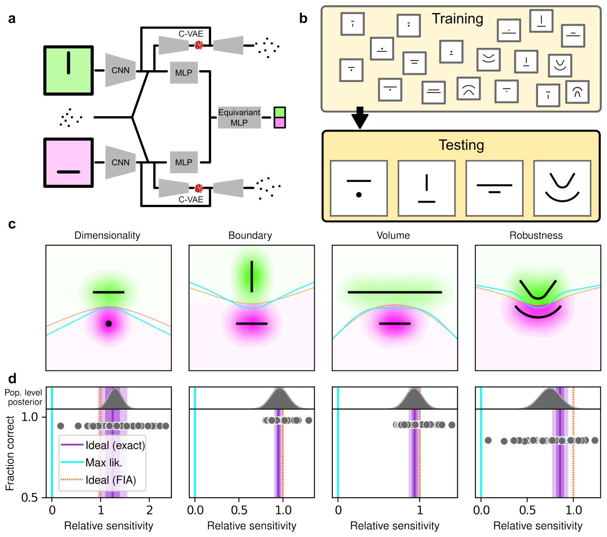
ANN была спроектирована следующим образом (подробнее см. в Методах). Входной каскад состоял из двух предварительно обученных сверточных нейронных сетей (CNN) VGG16, каждая из которых принимала графическое представление одной из двух рассматриваемых моделей. VGG была выбрана как популярная архитектура, которую часто принимают за эталон для сравнения с человеческой зрительной системой. CNN состояли из стека сверточных слоев, веса которых оставались замороженными на своих предварительно обученных значениях, за которыми следовали три полносвязных слоя, веса которых могли изменяться во время обучения. Выходы CNN подавались в многослойный перцептрон (MLP), состоящий из линейных слоев, слоев выпрямленной линейной функции (ReLU) и слоев пакетной нормализации. Затем выходы MLP объединялись и подавались в эквивариантный MLP, который обеспечивает эквивариантность выхода сети при перестановке позиций двух моделей с помощью специальной схемы разделения параметров. Сеть также содержала две структуры условного вариационного автокодировщика (C-VAE), которые стремились воспроизвести процесс генерации данных, обусловленный каждой моделью, и, следовательно, побуждали вышестоящие полносвязные слои изучать представления моделей, которые фиксировали признаки, релевантные для задачи.
Важно
Обученные ANN превзошли людей по точности и продемонстрировали предпочтения простоты, близкие к теоретически оптимальным, при этом их внутренняя вариативность была значительно ниже человеческой.
После обучения ANN выполняли задачу существенно лучше, чем участники-люди, с более высокой общей точностью, включая более высокую чувствительность к правдоподобию (Рис. SN), и предпочтениями простоты, которые более точно соответствовали теоретически оптимальным значениям (Рис. 4c, d). Эти предпочтения простоты были ближе к тем, что ожидаются от симулированных наблюдателей, использующих точное апостериорное распределение байесовской модели, а не аппроксимацию FIA, что согласуется с тем фактом, что FIA обеспечивает несовершенную аппроксимацию точного байесовского апостериорного распределения. Эти предпочтения простоты незначительно варьировались по величине в разных сетях, но, в отличие от участников-людей, эта вариативность была относительно небольшой (сравните диапазоны значений на Рис. 3c и 4d, построенные в разных масштабах по оси x), и она не была признаком субоптимального поведения сети, поскольку она не была систематически связана с какими-либо различиями в целом высоких показателях точности для каждого условия (Рис. 4d; среднее апостериорное ± ст. откл. коэффициента Спирмена между точностью и /β − 1/, где β — чувствительность: размерность, -0.14 ± 0.10; граница, 0.08 ± 0.11; объем, -0.12 ± 0.11; устойчивость, -0.08 ± 0.11).
{kind=link}
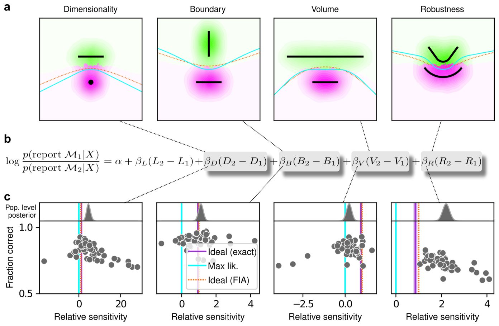
Осторожно
Хотя стохастическая природа задачи вносит некоторый вклад в вариативность предпочтений, она не объясняет наблюдаемую у людей субоптимальность.
Эти результаты подразумевают, что стохастическая природа задачи порождает некоторую вариативность в смещениях простоты даже после интенсивного обучения для оптимизации точности выполнения, но этот источник вариативности сам по себе не может объяснить диапазон чувствительности (и субоптимальности), демонстрируемый участниками-людьми.
Люди, в отличие от ИНС, сохраняют предпочтение субоптимальной простоты
Наши результаты в сочетании с тем фактом, что мы не предоставляли участникам обратную связь по каждой попытке во время выполнения задачи, позволяют предположить, что измеренные нами предпочтения простоты у людей не являются просто выученными оптимизациями для данных конкретных условий задачи, а скорее представляют собой более неотъемлемую (и вариативную) часть того, как мы принимаем решения в условиях неопределенности. Однако, поскольку мы предоставили каждому участнику инструкции, перекликающиеся с байесовским мышлением (см. Методы), и краткий обучающий набор с обратной связью перед сессией тестирования, мы не можем исключить на основании данных, представленных только на Рис. 3, что по крайней мере некоторые аспекты предпочтений простоты, измеренные у участников-людей, зависели от этих конкретных инструкций и условий обучения. Поэтому мы провели второй эксперимент, чтобы исключить эту возможность.
Важно
Люди демонстрируют устойчивое предпочтение простоты независимо от инструкций, в то время как ИНС адаптируются к конкретным условиям обучения.
Для этого эксперимента мы использовали те же варианты задачи, что и выше, но с другим набором инструкций и обучения, разработанным для того, чтобы побудить участников выбирать модель с максимальным правдоподобием (т.е. не интегрировать по скрытым причинам, а рассматривать только ту единственную причину, которая лучше всего соответствует наблюдаемым данным), тем самым игнорируя сложность модели. В частности, визуальные подсказки были такими же, как в исходном эксперименте, но участников просили сообщить, какая из двух фигур на экране ближе к центру масс облака точек. Мы убедились, что участники, набранные для этой задачи «максимального правдоподобия», не участвовали в исходной «генеративной» задаче. Мы снова следовали заранее зарегистрированному плану эксперимента и анализа и собрали данные от 201 участника, разделенных на четыре группы по ~50 человек в каждой. Мы также обучили и протестировали ИНС на этой версии задачи, используя решение с максимальным правдоподобием в качестве правильного ответа.
Несмотря на это существенное различие в инструкциях и обучении, участники-люди демонстрировали схожие предпочтения простоты как в генеративной задаче, так и в задаче с максимальным правдоподобием, что позволяет предположить, что люди имеют общую склонность к простоте даже без соответствующих инструкций или стимулов (Рис. 5, слева). В частности, несмотря на некоторые количественные различия, распределения относительных чувствительностей показали одни и те же основные закономерности для обеих задач, с общим увеличением относительной чувствительности от объема (0,19 ± 0,08 для задачи с максимальным правдоподобием; сравните со значениями выше) к границе (0,89 ± 0,10), к робастности (2,27 ± 0,15) и к размерности (2,29 ± 0,41). В резком контрасте с данными по людям и ИНС, обученными на истинной генеративной задаче, чувствительность ИНС к сложности модели в задаче с максимальным правдоподобием была близка к нулю для всех четырех параметров (Рис. 5, справа).
{kind=link}
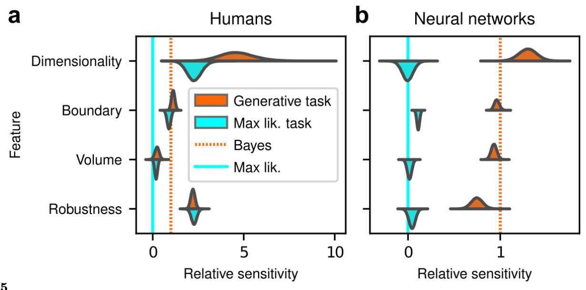
Пояснение
ИНС (искусственные нейронные сети) — математические модели, обучаемые на данных для решения задач; в данном контексте они сравниваются с человеческим мышлением.
Чтобы суммировать сходства и различия между тем, как люди и ИНС использовали смещения в сторону простоты для управления своим поведением при принятии решений в этих задачах, и их влияние на производительность, на Рис. 6 показана общая точность для каждого набора протестированных нами условий. В частности, для каждого участника или ИНС, конфигурации задачи и набора инструкций мы вычислили процент правильных ответов как в отношении генеративной задачи (т.е. для которой теоретически оптимальная производительность зависит от смещений в сторону простоты), так и задачи с максимальным правдоподобием (т.е. для которой теоретически оптимальная производительность не зависит от смещений в сторону простоты). Поскольку решения с максимальным правдоподобием являются детерминированными (они зависят только от того, к какой модели ближе центроид данных, и, следовательно, существует оптимальная, четкая граница принятия решений, которая ведет к идеальной производительности), а генеративные решения — нет (они зависят вероятностно от членов правдоподобия и смещения, поэтому, как правило, невозможно достичь идеальной производительности), ожидается, что производительность в первом случае будет выше, чем во втором. Соответственно, как ИНС, так и (в меньшей степени) люди, как правило, работали лучше при оценке относительно решений с максимальным правдоподобием. Более того, ИНС имели тенденцию демонстрировать поведение, которое соответствовало оптимизации под заданные условия задачи: сети, обученные находить решения с максимальным правдоподобием, справлялись лучше, чем сети, обученные находить генеративные решения для задачи с максимальным правдоподобием, а сети, обученные находить генеративные решения, справлялись лучше, чем сети, обученные находить решения с максимальным правдоподобием для генеративной задачи. Напротив, люди, как правило, принимали схожие стратегии независимо от условий задачи, во всех случаях используя байесовские смещения в сторону простоты. Короче говоря, ИНС демонстрировали предпочтения простоты только тогда, когда их этому обучали, в то время как участники-люди демонстрировали их независимо от своих инструкций и обучения.
{kind=link}
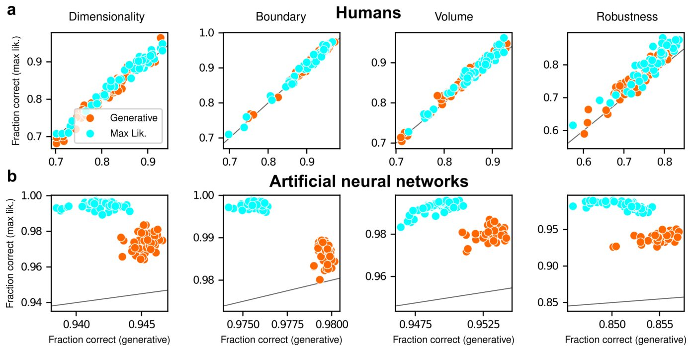
Обсуждение
Простота давно считается ключевым элементом эффективного рассуждения и рационального принятия решений. Она была предложена в качестве основополагающего принципа в философии, психологии, статистическом выводе и, в последнее время, в машинном обучении (хотя см. недавнюю работу о том, как высокосложные модели бросают вызов этому традиционному взгляду в науках). Соответственно, в человеческом познании были выявлены различные формы предпочтения простоты, такие как склонность отдавать предпочтение более гладким (простым) кривым как предполагаемому латентному источнику зашумленных наблюдаемых данных, а также в зрительном восприятии, связанном с группировкой, обнаружением контуров и идентификацией форм. Однако, несмотря на прочное теоретическое обоснование этих исследований, никто не пытался определить количественное понятие предвзятости в пользу простоты, величину которой можно было бы измерить (а не просто обнаружить) в поведении человека. В данной работе мы показали, что предпочтения простоты тесно связаны со специфической математической формулировкой бритвы Оккама, находящейся на пересечении байесовского выбора моделей и теории информации. Эта формулировка позволила нам выйти за рамки простого обнаружения предпочтения простых объяснений данных и точно измерить силу этого предпочтения у искусственных и человеческих участников в различных теоретически обоснованных условиях.
Теоретический вклад и границы параметров
Наше исследование вносит несколько новых вкладов. Первый — теоретический: мы вывели новый член аппроксимации Фишеровской информации (FIA) в байесовском выборе моделей, который учитывает возможность того, что лучшая модель находится на границе семейства моделей (см. подробности в разделе А.2 Методов). Этот граничный член важен, поскольку он может учитывать возможность того, что из-за шума в данных лучшее значение одного параметра (или комбинации параметров) принимает экстремальное значение. Это условие связано с явлением «испарения параметров», которое часто встречается в реальных моделях данных. Более того, границы параметров особенно важны для исследований перцептивного принятия решений, в которых сенсорные стимулы ограничены физическими ограничениями экспериментальной установки, и поэтому рассуждение о неограниченных параметрах было бы проблематичным для наблюдателей. Например, представьте себе разработку эксперимента, требующего от участников сообщить местоположение визуального стимула. В этом случае неограниченный набор возможных местоположений (например, вдоль линии, уходящей бесконечно далеко влево и вправо) явно неприемлем. Наш «граничный» член формализует влияние рассмотрения набора возможностей как имеющего границы, что имеет тенденцию увеличивать локальную сложность за счет уменьшения количества локальных гипотез, близких к данным (см. Рис. 1b).
Важно
Мы вывели новый член FIA, учитывающий границы параметров, что позволяет точнее моделировать принятие решений в условиях физических ограничений.
Искусственные нейронные сети и обучение
Второй вклад этой работы относится к искусственным нейронным сетям (ANN): мы показали, что эти сети могут научиться использовать или игнорировать предпочтения простоты оптимальным образом (т.е. в соответствии с величинами, предписанными теорией), в зависимости от того, как они обучены. Эти результаты отличаются от недавних работ, сосредоточенных на идее о том, что реализация простых функций может быть ключом к обобщению в глубоких нейронных сетях, и дополняют их. Здесь мы показали, что эффективное обучение может учитывать сложность пространства гипотез, а не только решающей функции, при формировании нормативных предпочтений простоты. С одной стороны, эти результаты не кажутся удивительными, поскольку ANN, и глубокие сети в частности, являются мощными аппроксиматорами функций, которые хорошо работают на практике в широком спектре задач вывода. Соответственно, наши ANN, обученные с учетом истинных генеративных решений, смогли принимать эффективные решения, включая предпочтения простоты, относительно генеративного источника заданного набора наблюдений. Аналогично, наши ANN, обученные с учетом решений максимального правдоподобия, смогли принимать эффективные решения без предпочтений простоты относительно соответствия максимальному правдоподобию для заданного набора наблюдений. С другой стороны, эти результаты также дают новое понимание того, как можно анализировать ANN, чтобы лучше понять, какие виды решений они производят для конкретных проблем. В частности, оценка наличия или отсутствия видов предпочтений простоты, которые мы наблюдали, может помочь определить, избегает ли ANN переобучения на обучающих данных и предоставляет ли более обобщаемые решения.
Поведение человека и байесовское интегрирование
Третий, и самый важный, вклад этой работы относится к поведению человека: люди склонны использовать определенные формы предпочтений простоты при принятии решений, которые подразумевают определенные базовые вычисления. С теоретической точки зрения, разница между байесовским решением (т.е. тем, которое включает предпочтения простоты) и решением максимального правдоподобия (т.е. тем, которое не включает предпочтения простоты) для этих задач заключается в том, что последнее учитывает только одну наилучшую модель из каждого семейства, тогда как первое интегрирует все возможные модели в каждом семействе. Этот процесс интеграции и порождает предвзятость в пользу простоты, которая, что критически важно, не может возникнуть из более простых механизмов, таких как выборка по различным возможным причинам стимула из-за ненадежного сенсорного представления или стохастического процесса выбора (см. Рис. 2). Наш вывод о том, что люди, в отличие от ANN, склонны использовать байесовское решение даже тогда, когда им даны инструкции использовать решения максимального правдоподобия, предполагает, что мы естественно не принимаем решения на основе единственного лучшего или архетипического экземпляра внутри семейства возможностей, а скорее интегрируем по всему этому семейству. Говоря более конкретно применительно к нашей задаче, когда участников просили определить форму, наиболее близкую к точкам данных, они, вероятно, не были уверены, какое именно местоположение на каждой форме было ближайшим. Поэтому они естественным образом интегрировали по всем возможностям, что вызывает предпочтения простоты, предписанные байесовским решением. Эти результаты помогут мотивировать и информировать будущие исследования, чтобы определить, где и как мозг реализует и хранит эти интегрированные решения для соответствующих задач принятия решений.
{kind=link}
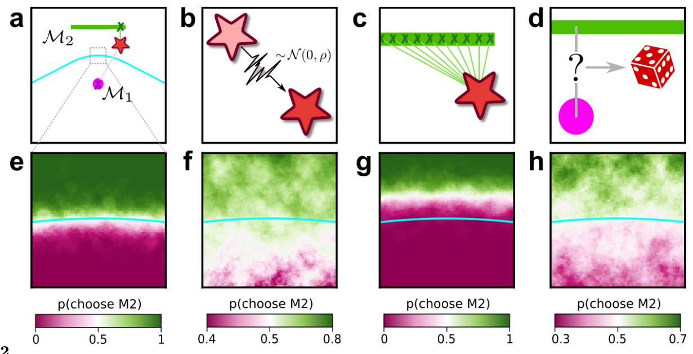
Пояснение
Байесовское решение учитывает вероятность всех возможных моделей, тогда как метод максимального правдоподобия выбирает только одну наиболее подходящую модель.
Источники разнообразия предпочтений
Еще одной ключевой особенностью наших результатов, заслуживающей дальнейшего изучения, является величина и изменчивость предпочтений, демонстрируемых участниками-людьми. В среднем чувствительность человека к каждой характеристике геометрической модели была: 1) больше нуля, 2) по крайней мере, немного отличалась от оптимального значения (например, больше для размерности и надежности, меньше для объема), 3) различалась для разных признаков и разных участников и 4) была относительно нечувствительна к инструкциям и обучению. В чем источник этого разнообразия? Одна из гипотез заключается в том, что люди могут придавать больший вес тем характеристикам модели, которые легче или дешевле вычислить. В наших экспериментах наиболее весомым признаком была размерность модели. В нашей математической структуре этот признак соответствует количеству степеней свободы возможного объяснения наблюдаемых данных и, следовательно, может быть относительно легко оценен. Напротив, наименее весомым признаком был объем модели. Этот признак подсчитывает количество различимых распределений вероятностей, содержащихся в модели, и, следовательно, включает интегрирование по всему семейству моделей. Другими словами, чтобы подсчитать, сколько различных состояний мира может быть объяснено определенной гипотезой, нужно перечислить их. Эта операция может быть вычислительно затратной (хотя для моделей, которые мы использовали в наших задачах, это число напрямую связано с длиной линий, нарисованных на экране, измеренной в единицах стандартного отклонения шума, и, следовательно, могло быть довольно простым для вывода нашими участниками, см. раздел А.4 Методов). Два других термина, граница и надежность, являются промежуточными с точки зрения человеческого веса и вычислительной сложности. Их труднее вычислить, чем размерность, потому что они зависят от данных и от свойств модели в точке максимального правдоподобия. Однако они также проще, чем термин объема, потому что это локальные величины, которые не требуют интегрирования по всему многообразию моделей. Эта интуиция приводит к новым вопросам о взаимосвязи между сложностью сравниваемых объяснений и сложностью самого процесса принятия решений, ставя под сомнение понятия ограниченной рациональности и убывающей отдачи при оптимальном выводе. Ответы на такие вопросы выходят за рамки настоящей работы, но заслуживают дальнейшего изучения.
Будущие направления и ограничения
Другое интригующее будущее направление — сравнение с другими формальными подходами к возникновению простоты, которые могут привести к другим предсказаниям. Недавние исследования утверждают, что априорное распределение Джеффри (на котором основан наш геометрический подход) может давать неполную картину сложности класса моделей, часто встречающихся в естественных науках, которые содержат много комбинаций параметров, не влияющих на поведение модели, и вместо этого предложили использование априорных распределений, зависящих от данных. Эти два метода приводят к разным результатам, особенно в режиме ограниченных данных. Было бы полезно понять значимость этих различий для принятия решений человеком и машиной. Наш дизайн задач и анализ имели несколько ограничений, которые могут быть решены в будущих исследованиях. Мы использовали только четыре варианта задач, что ограничивает обобщаемость наших результатов (хотя отметим, что, поскольку штрафы за границу и надежность зависят от модели и данных, они оба предполагали континуум значений в задачах, и штраф за границу был актуален для всех типов задач). Мы также рассматривали только фиксированный размер выборки N, условия, для которых FIA для вовлеченных моделей могла быть вычислена аналитически, и независимые испытания, которые игнорируют последовательные аспекты повторяющихся решений. Расширение нашего подхода для ослабления этих допущений или включение условий, в которых объем или размерность моделей могут варьироваться более свободно, даст дальнейшее понимание того, когда и как люди проявляют предпочтения простоты при принятии решений.
Осторожно
Наше исследование опирается на конкретные математические модели и ограниченный набор задач; результаты могут варьироваться в более сложных или динамических условиях.
В целом, наша работа демонстрирует прямую количественную значимость формальных понятий сложности моделей для поведения человека. Опираясь на сочетание теоретических достижений, вычислительного моделирования и поведенческих экспериментов, мы установили новый набор нормативных ориентиров для принятия решений в условиях неопределенности. Эти результаты открывают новую область, в которой человеческое познание может быть измерено по отношению к оптимальным процессам вывода, что потенциально приведет к новым знаниям об ограничениях, влияющих на обработку информации в мозге.
{kind=link}
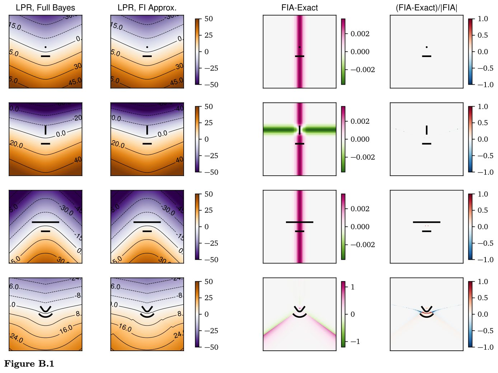
{kind=link}
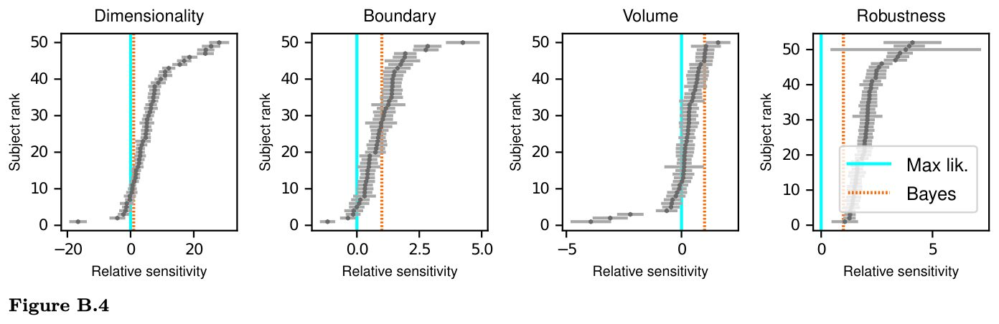
{kind=link}
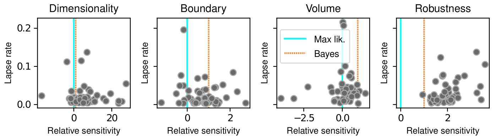
{kind=link}
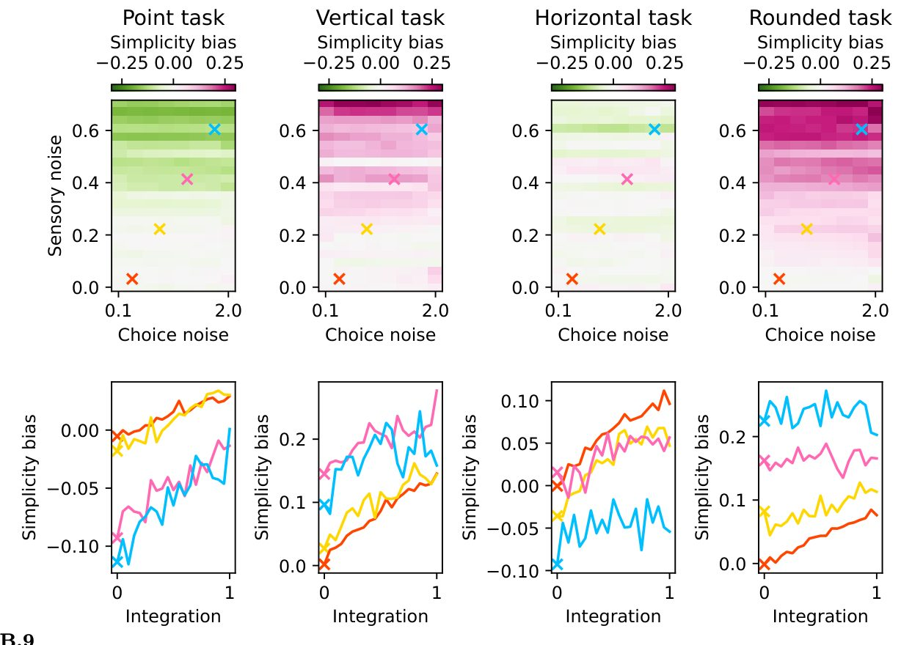
{kind=link}
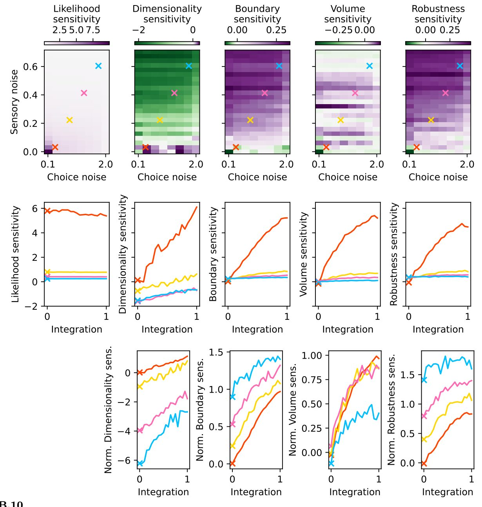
{kind=link}
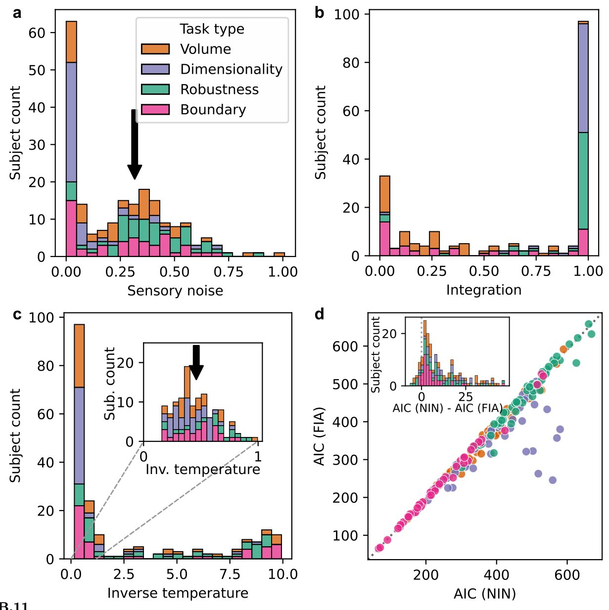
{kind=link}
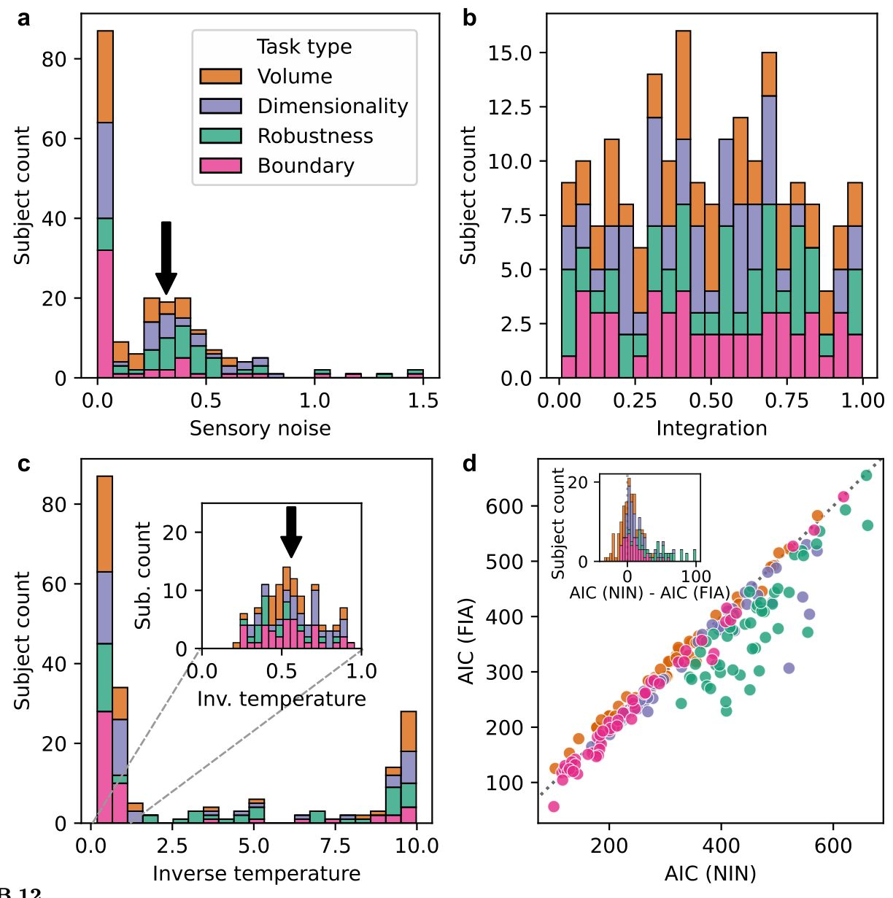
Таблицы
Таблица 1. Параметры генеративной задачи и задачи максимального правдоподобия
| Параметр | Люди (Генеративная задача) | ИНС (Генеративная задача) | Люди (Задача макс. правдоподобия) | ИНС (Задача макс. правдоподобия) |
|---|---|---|---|---|
| µα(up/downbias) | 0.107 ± 0.023 | −0.242 ± 0.151 | 0.056 ± 0.024 | 0.010 ± 0.07 |
| µL(likelihood) | 0.461 ± 0.012 | 6.529 ± 0.188 | 0.561 ± 0.018 | 7.966 ± 0.401 |
| µD(dimensionality) | 2.150 ± 0.445 | 8.484 ± 0.653 | 1.285 ± 0.231 | −0.030 ± 0.486 |
| µB(boundary) | 0.518 ± 0.045 | 6.286 ± 0.186 | 0.499 ± 0.058 | 0.883 ± 0.121 |
| µV(volume) | 0.108 ± 0.057 | 6.089 ± 0.204 | 0.105 ± 0.044 | 0.128 ± 0.196 |
| µR(robustness) | 1.018 ± 0.056 | 4.882 ± 0.417 | 1.276 ± 0.085 | 0.356 ± 0.281 |
Таблица 2. Статистические параметры моделей
| Параметр | ROPE | 95%HDI (генеративная) | PD (генеративная) | 95%HDI (макс. правдоподобие) | PD (макс. правдоподобие) | ||
|---|---|---|---|---|---|---|---|
| Правдоподобие | βL | < 0.0076 | [0.012, 0.437] | 1.00 | [0.526, 0.597] | 1.00 | |
| Размерность | βD | < 0.43 | [1.299, 3.048] | 1.00 | [0.835, 1.745] | 1.00 | |
| Граница | βB | < 0.06 | [0.43, 0.604] | 1.00 | [0.386, 0.612] | 1.00 | |
| Объем | βV | < 0.091 | [−0.005, 0.218] | 0.97 | [0.019, 0.193] | 0.99 | |
| Надежность | βR | < 0.11 | [0.908, 1.126] | 1.00 | [1.11, 1.446] | 1.00 |
Схема исследования
Препринт не прошёл рецензирование. Выводы предварительные.
Источник
| Категория | Лицензия препринта |
|---|---|
| neuroscience | CC BY 4.0 |
Источники
| Источник | Ссылка |
|---|---|
| Страница препринта | biorxiv.org |
| Полный текст (PDF) | biorxiv.org |
| Копия PDF | github.com |
| DOI | doi.org |
| Метаданные Crossref | api.crossref.org |
| Europe PMC | europepmc.org |